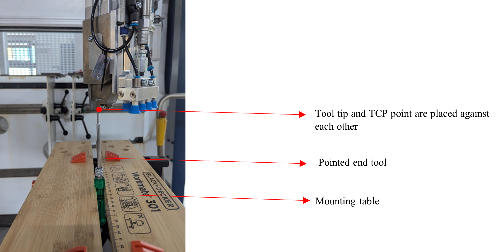
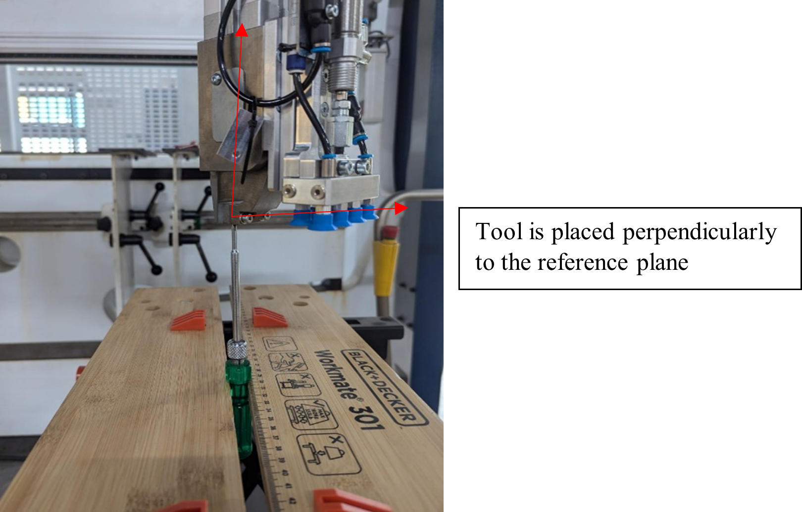
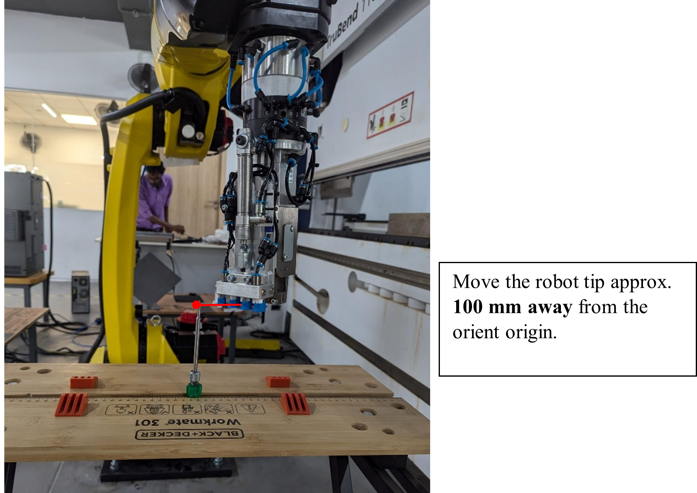
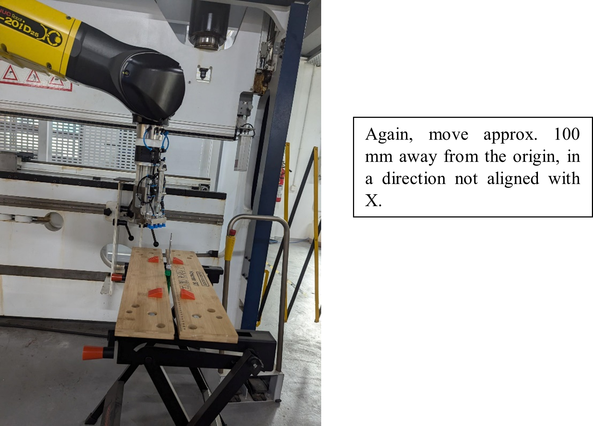
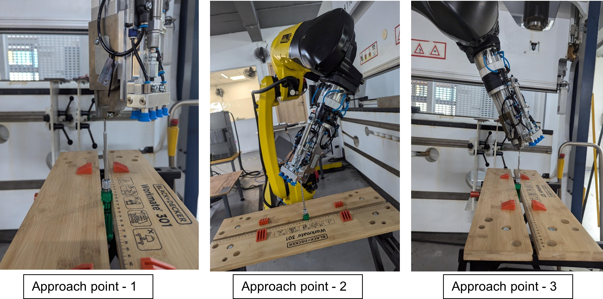

Frame Calibration
Frame calibration is a critical step in robot setup that ensures the robot’s coordinate system is accurately aligned with the physical workspace and tooling. Proper calibration allows for precise and repeatable robot movements, which is essential for bending tasks.
The main frames that need to be calibrated are:
Enter xref
Tool Frame (TCP) Calibration
Tool Frame calibration, also known as TCP (Tool Center Point) calibration, is the process of defining the exact position and orientation of the tool’s tip relative to the robot’s flange.

Pre-setup for TCP Calibration
-
Mounting Plane: A fixed surface to hold the reference tool during calibration. In our setup, we used a stable table as the mounting plane surface.
-
Reference Tool: A pointed-end tool mounted on the mounting plane. This tool helps define the exact tip of the tool (TCP). We used a pointed screwdriver for accuracy.(Using a sharp, well-defined tool is important for precise TCP calculation.)

Setup
-
Before recording any TCP points, make sure the correct pre-setup is done — otherwise, the calibration will be incorrect.
-
Set Tool Frame to Zero tool.
-
Select a tool frame that has no offset values (all X, Y, Z, W, P, R = 0)
-
This ensures the robot calculates the TCP from the robot flange, not from an existing offset.
If you select a tool frame that already has values, the robot will calculate the new TCP relative to the old one, not from the base of the robot arm. For Example: In our robot, Tool Frame 9 is the zero tool (all values are zero). -
To set Tool frame as zero: Press SHIFT + COORD in TP, then select Tool and Press 9 to set the zero tool.
-

Methods for Setting TCP
Enter xref
| FANUC supports additional methods for TCP setup. We have explored only the most commonly used ones above. Refer to the robot manual for other available methods. |
Six-Point Method For Tool Frame
In six-point method, you will teach a total of six points to calculate the Tool Center Point (TCP):
-
Three Approach Points - Touch the same point(TCP) in space from different angles to define the TCP position.
-
Orient Origin Point - A reference point for orientation.
-
X-Direction Point - Defines the direction of the tool’s X-axis.
-
Y-Direction Point - Defines the direction of the tool’s Y-axis.
This method calculates both the position and orientation of the tool.
| The user can decide and set any direction as X and Y (or X and Z), based on how the tool is mounted. This makes it ideal for tools that are tilted, rotated, or mounted in unique orientations. |
Approach Points
-
Manually jog the robot to reach the approach point and position the TCP on the reference tool tip. Then, press SHIFT + RECORD on the TP to record the approach point. A confirmation message will appear stating that a new point has been recorded.

Orient Origin Point

-
A reference point for orientation.
-
The tool tip should touch the mounting surface perpendicularly.
-
The orient origin helps define the tool’s base direction (Z-axis), and it must be perpendicular to the plane.
| The orient origin point has to be touched using the tip of the tool, pointing straight down toward the mounting plane, which makes the tool’s Z-axis perpendicular to the surface. |
X - Direction Point
-
Defines the tool’s X-axis direction for the tool.
-
The user can choose any direction for X or Y, depending on their application or preferred orientation.

Y - Direction Point
-
Defines the Y-axis direction for the tool.

Post TCP Setup for Six-Point Method
After setting the TCP, set the Tool Frame to the correct tool number which was chosen to find TCP by pressing SHIFT + COORD in TP, then select the tool number. Then press COORD to switch to Tool. Jogging in the Tool Frame will now move the robot in the tool’s direction, and the displayed coordinates will match the tool’s orientation.

Three-Point Method For Tool Frame
In the three-point method, only three approach points are needed. The user cannot define the tool’s orientation manually, so the robot calculates the direction based on its existing coordinate system and assumes the tool is aligned with the default Z-axis.

|
User and Jog Frame Calibration
Three-Point Method For User & Jog Frame
The Three-Point Method allows you to define a custom coordinate system by teaching three key points. The same procedure is used for both User Frame and Jog Frame. You will record:
-
Origin Point (Orient Origin): Place the known TCP or a calibration tool tip precisely at the origin of the desired frame (usually a corner on a flat surface).
-
X-Direction Point: Move the TCP approximately 100 mm along the desired X direction and record this point.
-
Y-Direction Point: Return to the origin point (Shift + MOVETO), then move approximately 100 mm along the desired Y direction and record the third point.
The robot will automatically calculate the frame orientation based on these three points.
Key Differences in Usage
-
User Frame: Affects all programmed motions. Use this when programming relative to a part, fixture, or table.
-
Jog Frame: Affects only manual jogging. Useful during setup or when jogging in a frame aligned to the tool or a different plane.
| Jog Frame does not affect robot programs, while User Frame does. |
Direct Entry of Frames
This method allows you to manually input the coordinate values for the Tool Frame or User Frame.
-
You can enter the origin position (X, Y, Z) and the orientation (W, P, R) directly into the frame.
-
Use this when the exact TCP position or user frame orientation is already known through CAD models, measurements, or prior calculations.
-
Access the frame setup menu, choose the desired Tool or User frame, and enter the values using the function keys and numeric/alphabet input.
-
Press ENTER to save the frame after all values are entered.
| Ensure no unnecessary tool or user frame is active when performing direct entry to avoid compounding offsets. Use SHIFT + COORD to switch to the desired frame. |
Example
-
The teach pendant allows direct input of TCP values when the design data already contains the tool offset.
-
For example, consider a cylindrical tool concentric with the robot flange and 100 mm in length along the Z-axis.
-
In this case, you can directly enter Z = 100 mm in the TCP direct entry screen, which shifts the TCP from the flange center to the tool tip.
-
In image we have used to set the zero as tool and user frame.